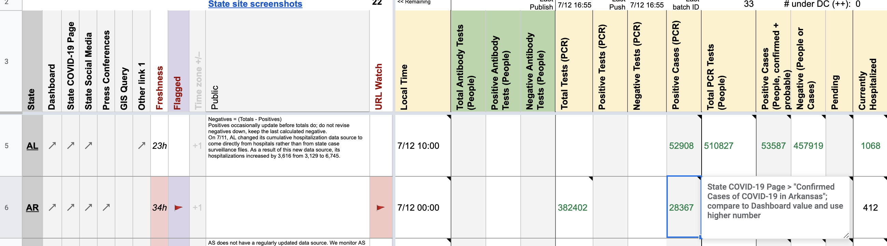
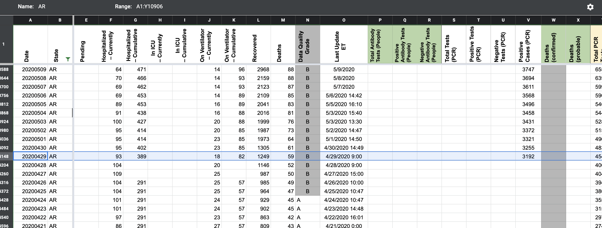
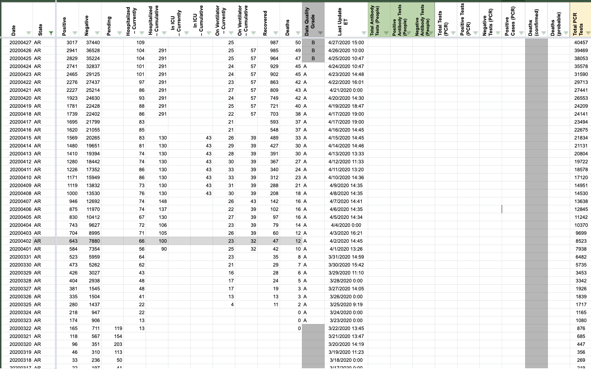
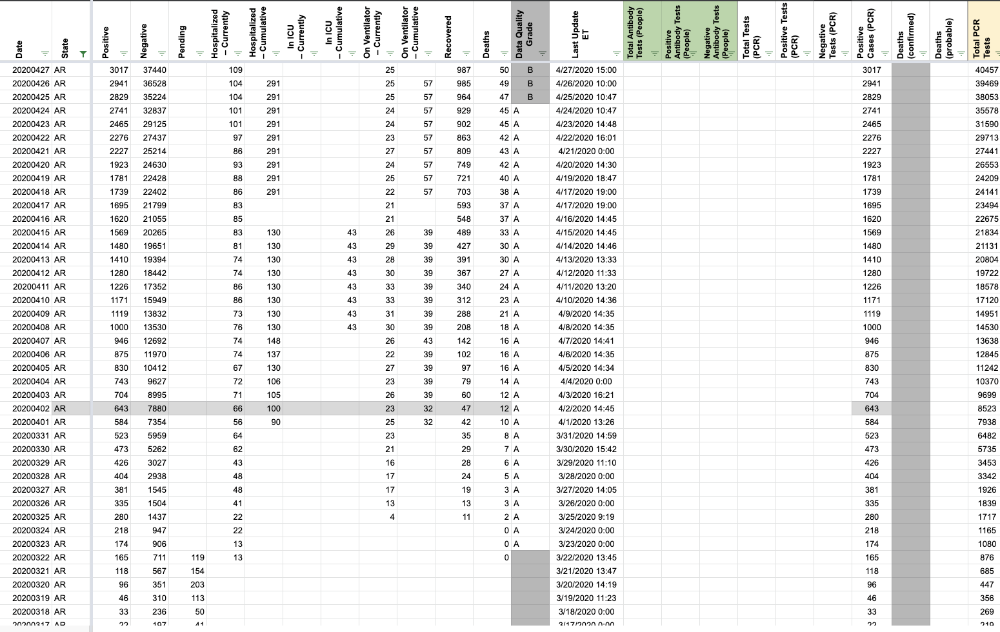
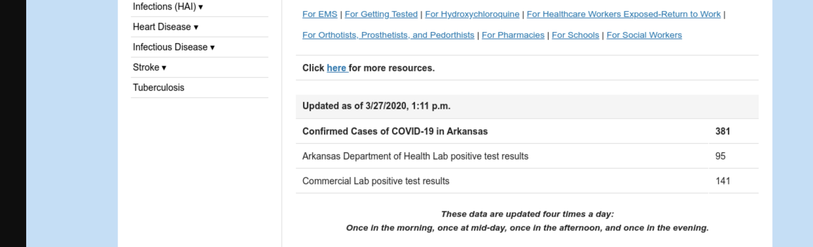
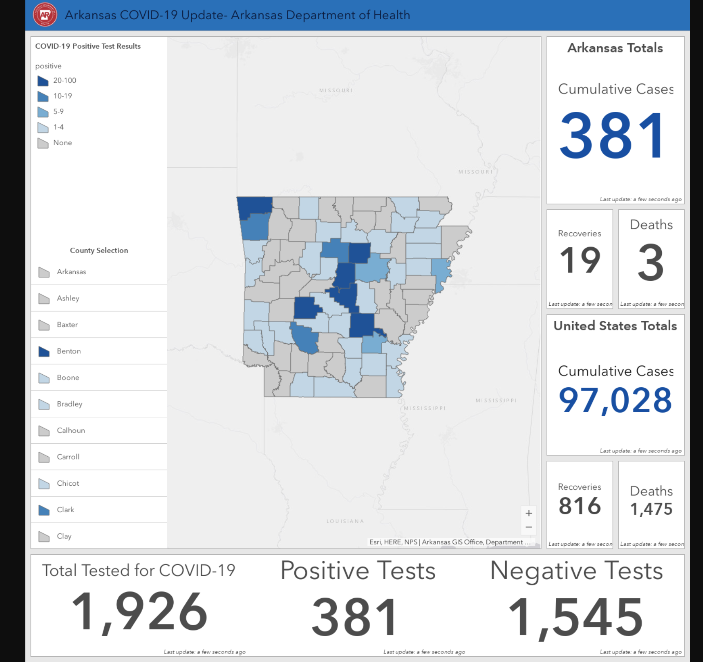

[AR] PCL Cases Historicals
Issue number 612
pscsharon opened this issue on July 13, 2020 at 7:06 am
Labels PCL/SVP Historicals Backfill
Arkansas has been reporting Confirmed-Cases since Mar 27th when they started using the arcgis dashboard. Different than other states, AR reported Confirmed-Cases only on their State website instead of the dashboard for a while. Even up to the current day, AR uses the phrase “Total Cases” in its arcgis instead of “Confirmed Cases.”
Please backfill confirmed cases back through Mar 27th.
Background:
Screenshots: http://covid-tracking-project-data.s3-website.us-east-1.amazonaws.com/state_screenshots/AR/
WS2 instructions: 
States’ Daily: 
It was verified that AR always reported confirmed cases through screenshots. Numbers copied to column V on States Daily accordingly. A gap in confirmed cases website screenshots exists in mid- to late March after the rollout of a new dashboard, but it can be inferred that these numbers also refer to confirmed cases due to (1) a consistent time-series and (2) the website always mirroring the dashboard, and the website indicating that it reports only confirmed cases after the introduction of dual screenshots. Before:  After: 
Double Checked. Nice work, Brian!
Mar 27th screenshots from archive:
 